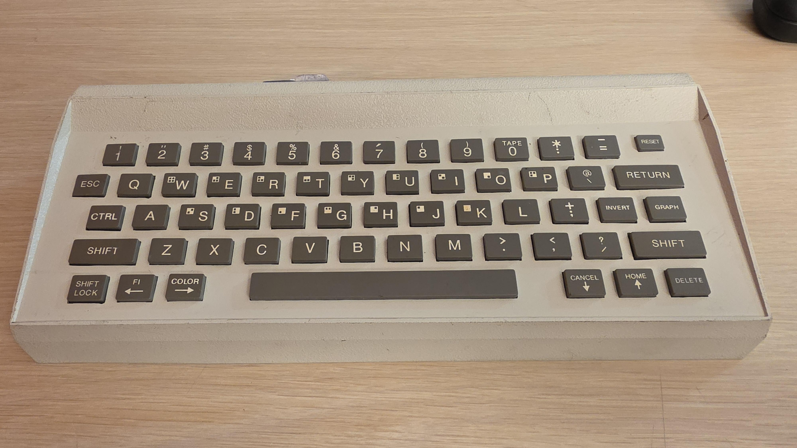
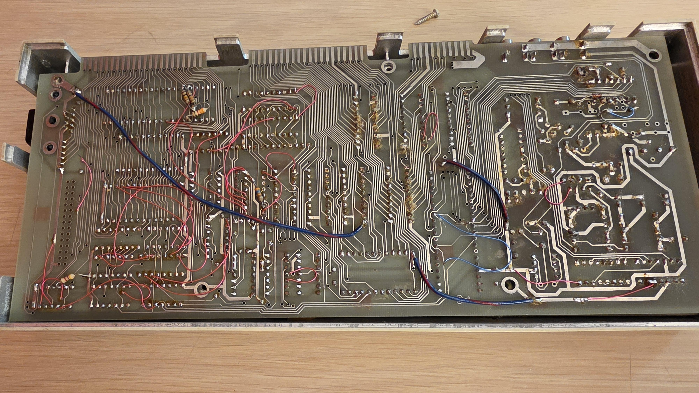

A Z80-family processor
The main processor has been identified from its markings as a Mostek MK3880, a Z80-family part. It gives the machine a different processor foundation from the 6809-based CoCo and Dragon.
1983 / 2026
The Humdinger appeared at a computer faire in 1983. Forty-three years later, a Goodwill find has given us a chance to understand how it was built—and what it might have become.
Meet the rediscovered machine
01 / REDISCOVERY
In 2020, Nick Taylor came across the Humdinger in old computer magazines and created its initial Wikipedia article. More references followed, but he found no evidence of a surviving example.
Then, in September 2026, Aarin—Reddit user woodson600—posted photographs of a computer he had found at Goodwill. Inside was a loose Humdinger badge. A machine Nick knew from the printed page was suddenly there to examine.
Aarin recognised that it deserved to be preserved and generously offered it to Nick for the cost of shipping. That generosity made this project possible.
Doppledinger is the preservation and reconstruction project. The original remains the Humdinger. Any reconstructed hardware or firmware will be identified clearly.
02 / HISTORY
Contemporary reporting establishes that it was shown and advertised. The scale of production and fulfilled orders remain open questions.
Venture Micro demonstrates the Humdinger at the 8th West Coast Computer Faire. Home Computing Weekly names Roger Pitkin as Venture’s president.
Home Computing Weekly, no. 4Faire reports describe colour graphics, a low price and expansion plans. Quest Electronics advertises a $129.95 computer with 4K RAM and an 8K BASIC ROM. These are advertised specifications, not a test of the surviving board.
Contemporary coverage and advertisingTim Hartnell writes that he and Richard Turner of Artic bought Humdingers. Hartnell says his machine had not arrived two weeks after the show. We do not yet know whether either order was fulfilled.
Tim Hartnell, “Stateside”Nick discovers the magazine references and starts the Wikipedia article, gathering the sparse surviving coverage.
The Reddit photographs rekindle the research and make a physical investigation possible. The machine’s earlier ownership history is still unknown.
The original discovery threadWebsite code: MIT. Future original hardware designs are planned for release under CERN Open Hardware Licence v2; the variant remains to be selected. Original project writing and Nick’s original photographs are licensed under CC BY 4.0. Historical material retains its own rights.
03 / THE MACHINE
The photographs are a starting point. Identification from markings, electrical measurements and historical advertising are different kinds of evidence.

The main processor has been identified from its markings as a Mostek MK3880, a Z80-family part. It gives the machine a different processor foundation from the 6809-based CoCo and Dragon.
An MC6847 video-display generator and MC1372P TV-output circuitry have been identified. Shared chips suggest familiar display characteristics, not proof of a shared overall design.
Two HM6116P-3 SRAMs provide 4 KB in total. How memory is mapped and shared with the display is still to be traced.
Advertising promises an 8 KB BASIC ROM. No ROM has yet been positively identified in the photographed machine. Empty sockets and a 20-way footprint need investigation.
Hartnell describes four voices over five octaves; the advert promises music and sound. No dedicated sound-generator IC has been positively identified in our photo review.
Hand wiring and unfilled sockets raise questions, but neither establishes prototype status. Provenance and comparison with original design records could help.
The MC6847 offers different resolutions and colour capabilities in different modes. Its conventional 256 × 192 bitmap mode uses two display states, not eight freely selectable colours per pixel. A framebuffer for that mode requires 6 KB—more than the 4 KB of RAM currently identified. Expansion and firmware support are not established. See the Motorola datasheet.
InfoWorld’s 11 April 1983 report lists Centronics, RS-232, joystick, cartridge, RF output and an external speaker. The photographed connectors have not yet been traced to confirm their assignments. An RCA/phono connector alone does not identify its signal.
04 / PRESERVATION
The first job is to record the machine as it arrives: its condition, markings, loose parts and circuitry. From there, the aim is a component inventory, traced schematic and a better understanding of the original design.
If original firmware cannot be recovered, a reconstruction may let us explore the intended experience. It would be documented as new work, with recovered facts, inferred behaviour and modern choices kept distinct.
Nick sees himself as a custodian for part of the machine’s journey. A safe, permanent home—potentially a museum—is the longer-term aim. No museum arrangement has been made.
05 / PROJECT NOTES
Research is being organised into a readable history and an evidence-led technical record. The next physical milestone is the machine’s arrival and initial photography.
Nick confirms shipment and an expected 7 October arrival. Doppledinger now has a repository reserved for research and reconstruction work.
A further research pack joins the archive, including magazine coverage and Quest material. Its claims are being reconciled with the earlier research rather than adopted uncritically.
06 / CAN YOU HELP?
Did you work with Venture Micro or Quest Electronics, order a Humdinger, or see one at a computer faire? Even a small piece of evidence could move this forward.
Please include where the information came from and distinguish recollection from surviving records. Original writing and photographs submitted for inclusion follow our standing CC BY 4.0 contribution terms. Ask permission before sharing someone else’s private correspondence.
READ THE EVIDENCE
This first account draws on contemporary publications, the discovery photographs and Nick’s research record. Historical specifications are attributed claims unless verified on the machine.
Website code: MIT. Future original hardware designs are planned for release under CERN Open Hardware Licence v2; the variant remains to be selected. Original project writing and Nick’s original photographs are licensed under CC BY 4.0. Historical material retains its own rights.